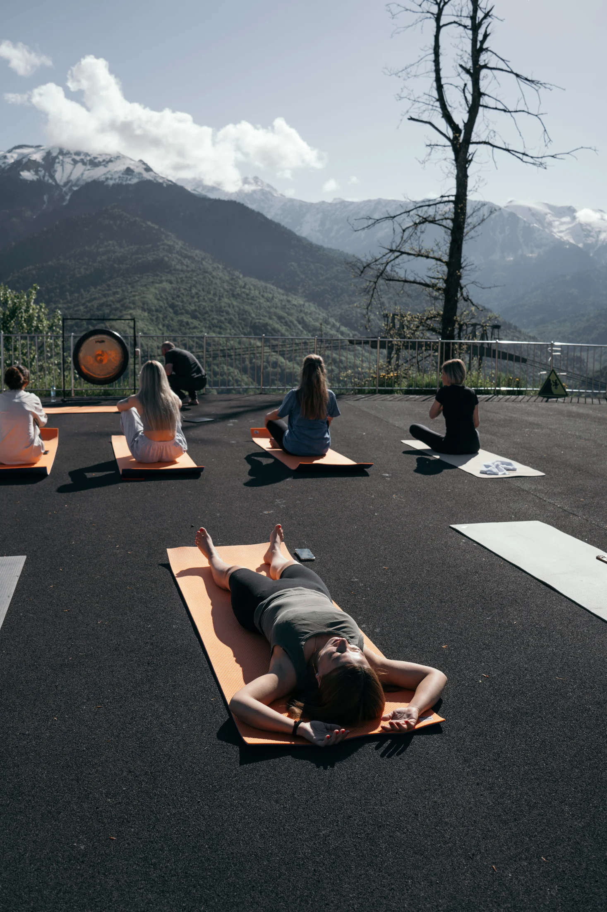
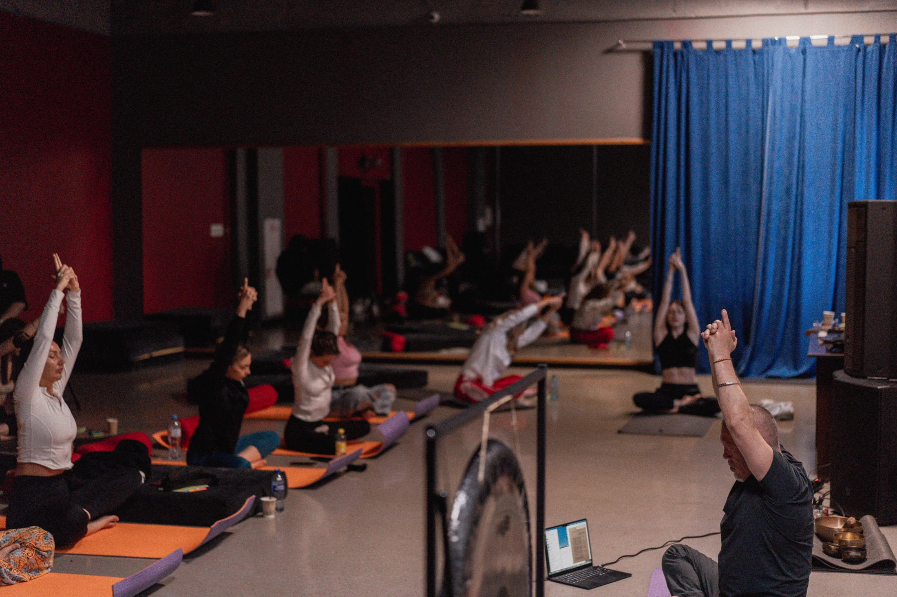
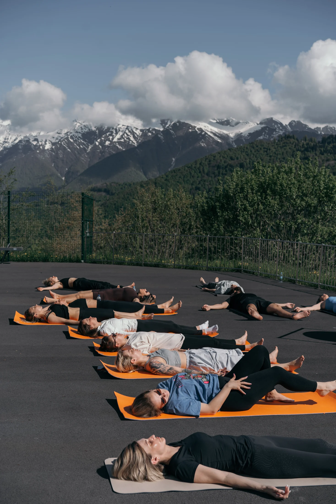
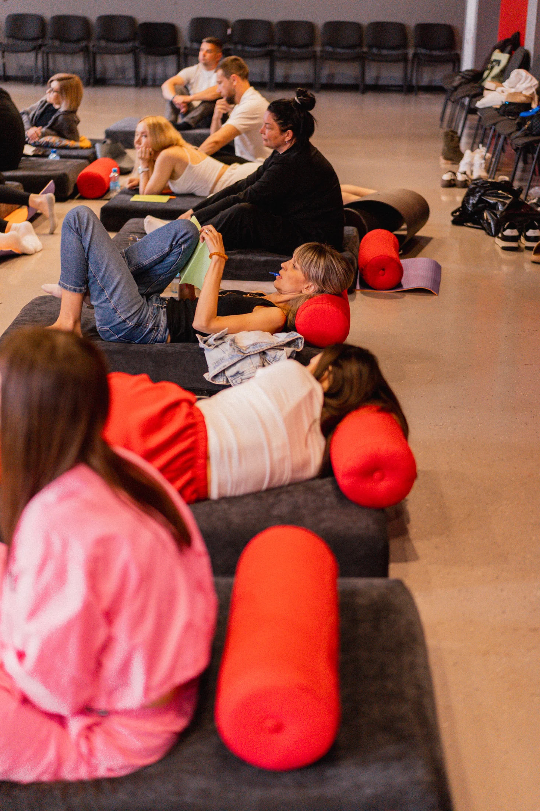

Вы заложник
одной роли
Дома вы «начальник», а на работе не можете проявить лидерство. Или не можете «выключить» родителя и расслабиться.
Практический тренингв Ташкенте
Освободись от навязанных ролей
и построй свою собственную.
27–29 ноября 2026
Ташкент, DoYoga Studio
01 — О ТРЕНИНГЕ
Три дня глубокой практической психологии, живого общения и курортного комфорта. Пространство, где можно остановиться, услышать себя и сделать следующий ход осознанно.
02 — ПРАКТИКА СВОБОДЫ
У каждого из нас есть набор ролей: родитель и ребёнок, начальник и подчинённый, оратор и организатор. Мы не предлагаем отказаться от них. Мы учим управлять ими.
«Ты уникален, твоя проблема — нет. Твоя задача — не искать виноватых, а осознанно выбрать, в какую игру играть прямо сейчас».
Вы поймёте свои главные и второстепенные роли, научитесь переключаться между ними и построите свою комфортную игру жизни.
03 — ЗНАКОМАЯ ИГРА
Роли помогают нам жить. Но когда одна из них начинает управлять вами — свобода выбора исчезает.
Дома вы «начальник», а на работе не можете проявить лидерство. Или не можете «выключить» родителя и расслабиться.
Ссоры возникают, когда вы или собеседник не успеваете переключиться из одной роли в другую.
Вы выполняете ожидания общества, семьи или начальства — и теряете себя в хронической усталости.
Вы понимаете, что играете не в свою игру, но не знаете, как изменить правила.
АТМОСФЕРА ТРЕНИНГА




04 — ДЛЯ КОГО
Чтобы разделить бизнес и семью, делегировать без контроля и управлять командой, понимая её роли.
Чтобы перестать быть «жертвой» родительской роли и вернуть в отношения лёгкость и партнёрство.
Психологи, коучи и HR, которые хотят получить новый практический инструмент для работы с запросами.
Если вы чувствуете, что живёте не своей жизнью и хотите понять, какие ожидания ваши, а какие — навязаны.
05 — ПРОГРАММА
Последовательная работа от честной диагностики к своему, устойчивому сценарию жизни.
«Какие роли я играю сейчас?» Инвентаризация своих сценариев. Выявление главных и второстепенных ролей.
«Чьи голоса звучат в моей голове?» Разделение навязанных установок от истинных желаний. Работа с внутренним критиком. Практические техники переключения ролей.
Создание нового, экологичного сценария. Личный план действий, интеграция ресурсов разных ролей и праздничное завершение.
06 — ВЕДУЩИЙ
Основатель Института психологии персонального будущего «Образ Мысли», практикующий психолог, автор методик.
Многолетний опыт в практической психологии. Его подход — синтез глубокого понимания человеческой природы и прикладных инструментов, работающих здесь и сейчас. Без эзотерики: только доказательные методы, этика и фокус на результате.
07 — МЕСТО ПРОВЕДЕНИЯ
DoYoga Studio
Ташкент
ПРОСТРАНСТВО ДЛЯ ПРАКТИКИ
DoYoga Studio в Ташкенте.
Спокойное пространство для групповой работы.
Живое общение и практики в течение трёх дней.
Место, где можно услышать себя и сделать следующий ход.
08 — ЗАПИСЬ НА ТРЕНИНГ
Чтобы забронировать место и узнать актуальную стоимость, позвоните нам:
+998 90 987 73 15Позвонить для записи ↗ТАШКЕНТ · 27–29 НОЯБРЯ 2026
БРОНИРОВАНИЕ
Напишите организатору — поможем подобрать формат участия.